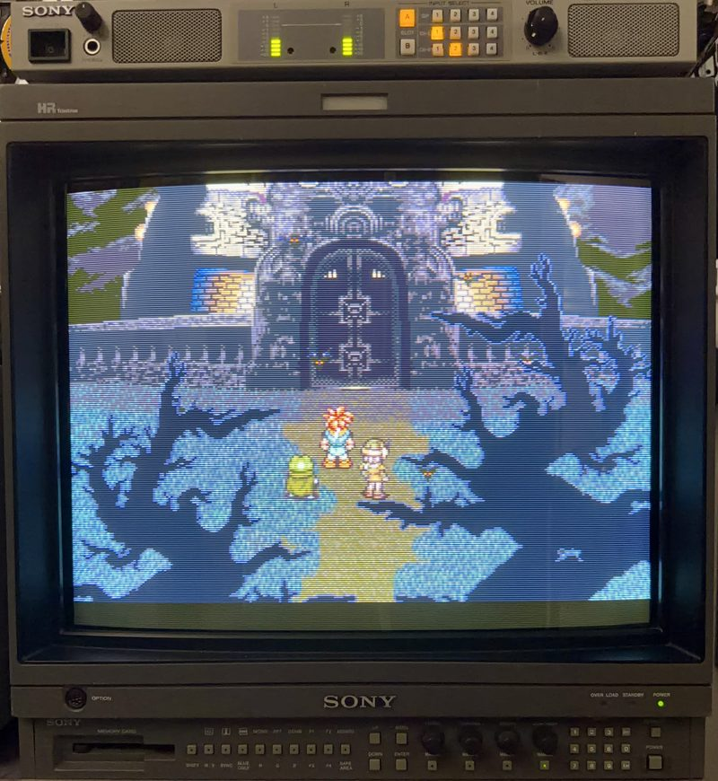
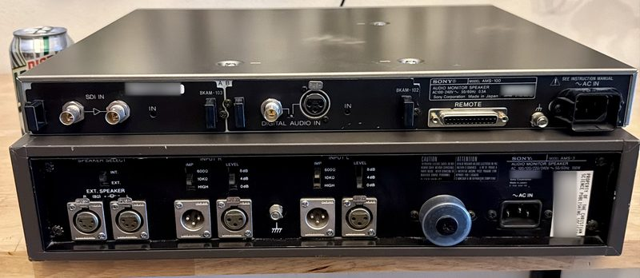

The Monitor Fleet
A working museum of Sony professional displays — broadcast BVMs, production PVMs, and the LMD generation that followed. Thirteen units across eight models.
TRINITRON FLEET — the magazine
The full story of the fleet, told properly: an interactive magazine covering every chassis, the calibration work, and why these monitors matter. Future volumes will follow as the fleet evolves.
Read Vol. 1 →The fleet roster

PVM-2950Q
Twenty-nine inches of presence, the biggest tube in the room. On screen: Super Mario World, 1990.

PVM-20L5
The late-generation 20-inch multiformat, AMS-100 riding on top. On screen: Super Mario Sunshine, 2002 — the year this generation of chassis arrived, at 480p over component.

BVM-20E1U
The primary broadcast chassis, AMS-100 riding on top. On screen: Chrono Trigger, 1995 — the year this chassis went into production.

BVM-A14F5U
Fully kitted — all three card slots filled, control panel and keypad flanking the tube. On screen: Beggar Prince, 2006 — a brand-new Genesis game a decade after Sega walked away, on the last CRT generation Sony ever built.

The LMD wall
The flat-panel side of the fleet, and the confidence layer behind the tubes — one shared 8.4-inch chassis family, one manual, one job: keep every signal honest before it reaches glass that matters.
How every one of these actually gets a signal — the switchers, the SCART-to-BNC cables, and the distribution amp behind the LMD wall — is written up in The Signal Chain; the vocabulary — TVL, multiscan, BKM, loop-through — is in the glossary. Recently departed: a BVM-14F5U and the nine-inch BVM-D9H5J found new homes — the fleet consolidates so the keepers get the attention they deserve.
The fleet, side by side
Every model in the collection on one sheet — tube or panel, size, resolution, what formats it locks to, which inputs it carries and which need a BKM card. Click a column heading to sort; each model name opens its full feature in Trinitron Fleet, Vol. 1, where the long-form spec table and sources live.
| Model | Display | Size | Resolution | Formats | HD | RGB / component | SD-SDI | HD-SDI / 3G | Option slots | Weight | Era | Units |
|---|---|---|---|---|---|---|---|---|---|---|---|---|
| PVM-2950QPVM · CRT | Super Trinitron CRT | 29" (27" viewable) | 600 TVL | NTSC / PAL / SECAM | No | RGB (BNC) | — | — | None | 115 lb | 1991–1996 | 1 |
| PVM-20L5PVM · CRT | HR Trinitron CRT | 20" (19" viewable) | 800 TVL | 240p–1080i, 720p | Yes | RGB / component, loop-through | Optional card | Optional card | 1 | ≈73 lb | 2002–2007 | 1 |
| BVM-20E1UBVM · CRT | HR Trinitron CRT (E-grade tube) | 20" (19" viewable) | 1000 TVL | 240p, 480i, 576i | No | RGB / component (fixed) + slots | Optional card | — | 4 + fixed input | ≈85 lb | 1995–2002 | 1 |
| BVM-A14F5UBVM · CRT | HR Trinitron CRT | 14" (13" viewable) | 800 TVL | 240p–1080i, 720p, 24PsF | Yes | Via BKM-68X | Via BKM-61D | Via BKM-62HS | 3 | ≈48 lb | 2003–2007 | 1 |
| LMD-940WLMD · LCD | TFT LCD (super-wide aperture) | 9" wide | 800×480 WVGA | SD + HD to 1080p | Yes | — | Standard | 3G-SDI + HDMI | None | ≈4.4 lb | 2011– | 1 |
| LMD-9020LMD · LCD | TFT LCD | 8.4" | 1024×768 XGA | SD | No | Component + RGB | — | — | None | ≈6.6 lb | 2005–2011 | 1 |
| LMD-9030LMD · LCD | TFT LCD | 8.4" | 1024×768 XGA | SD | No | Component + RGB | Standard | — | None | ≈6.8 lb | 2005–2011 | 5 |
| LMD-9050LMD · LCD | TFT LCD | 8.4" | 1024×768 XGA | SD + HD | Yes | Component + RGB | Standard | HD-SDI | None | ≈7.1 lb | 2005–2011 | 2 |
Specifications are Sony’s published figures, compiled from operating manuals, brochures and the 2002–2003 line-up guide; weights marked ≈ are approximate. TVL is Sony’s center-resolution spec for the CRTs; the LMDs are fixed-pixel panels, so they list native pixels instead.
Beyond video
The audio side of the rack
Four Sony AMS-100 units — three paired with CRT monitors, plus a rare dual-board configuration sourced from Japan. The AMS-100 monograph →
The ancestor
An AMS-3 — the older, far heavier analog forerunner of the AMS-100, and about twice the machine to look at. It landed untested with a scratchy volume pot; that has been cleaned and it plays. For now it is boxed up rather than racked. See the bench log · see it next to an AMS-100 →

